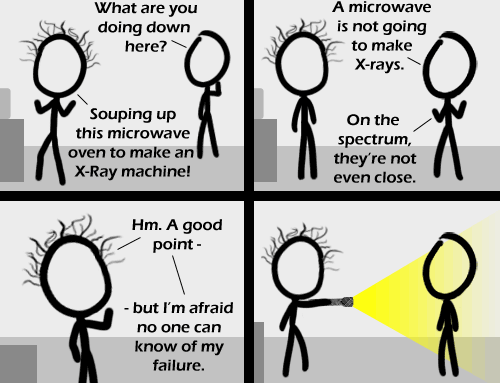

Comic JK 502
When I Feel Like It
⇤
<
?
>
⇥

⇤
<
?
>
⇥
Forum
.
RSS
.
Digg
.
Facebook
.
Reddit
.
Twitter
.
Stumbleupon
Enter your thoughts on number 502 here. Please, no spamming, trolling, or x-rays or flying potatoes. i will never understand why people post replies when no one is going back to check. although i do it too~BYI > I check back, sometimes.. also love the flying potatos addition. >> I check... and sometimes check way back. In other words, I have too much time on my hands. >>>Me 2 >>>> I got here with the random button a few hundred comics after this one. >>>>> Wow... you are from the future! I'm still making my way there... maybe today I'll make it to the present. IT BUUURNSSSS USSSSS Lolz. mas lol :D It might also be effective if if the chap on the right was a vampire, and the torch had been tuned to output light of the same colour-balance as natural sunlight... >I thought it was the UV that screwed with them? >>If they existed... >>>There are different schools of thought about what affects vampires: some say the colour-balance, some say the UV, some say Sarah Michelle Gellar hitting them with the torch... Then again, a microwave oven would make x-rays if it came towards you _really fast_. >If it comes towards you that fast you better worry about ducking and not about radiation >>ducks are, of course, immune to x-rays >>>I call shenanigans on that one >>>>...What just happened? >>>>>ROFL >>>>>Well, this is a story all about how my life got flipped turn upside down. I'd like to take a minute just sit right there, I'll tell you all about how I made x-rays from microwaves. >>>>>>You can't use that ever again now. I hope you're happy with what you did with it. >>>>>>>To be honest I am. >>>>>>>> So am I, son. So am I. Anyone see this as a reference of Alan Wake? My microwave oven is redshifted. >watch out for ducks! ducks>you >>>>>>>>>>>RRROOOOFFFLLL!!!!! Duckroll?